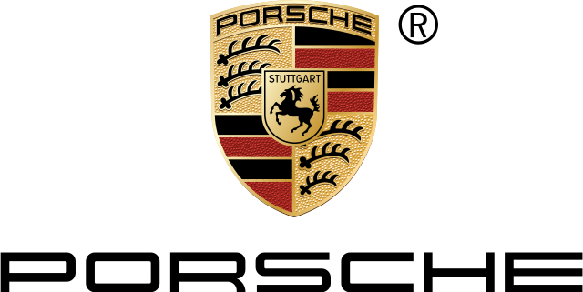
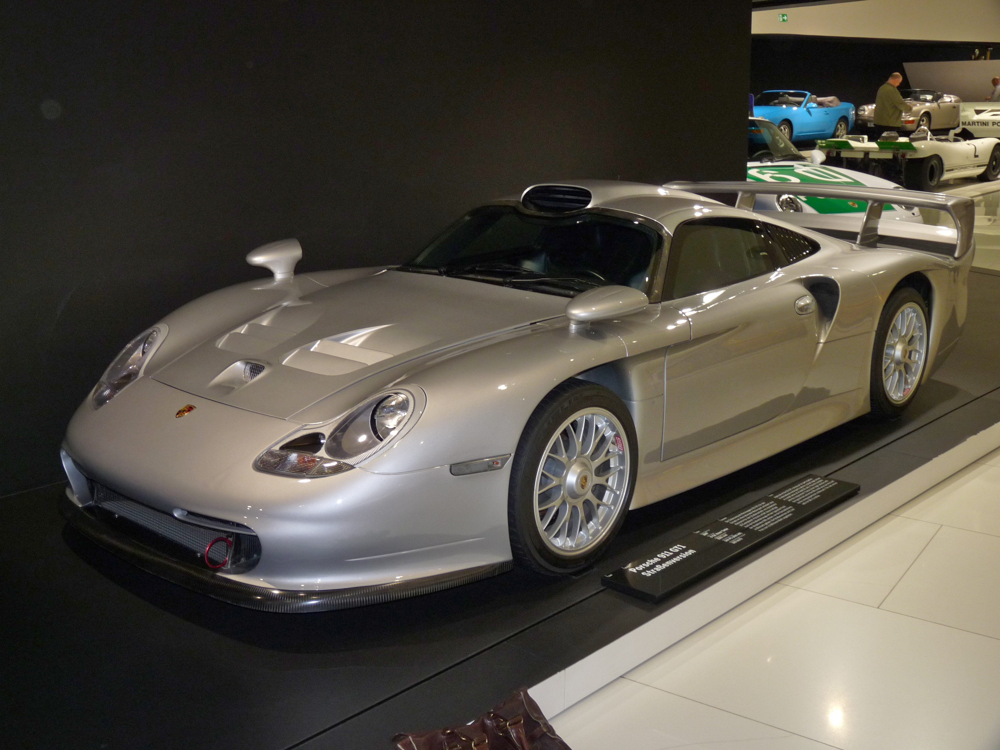
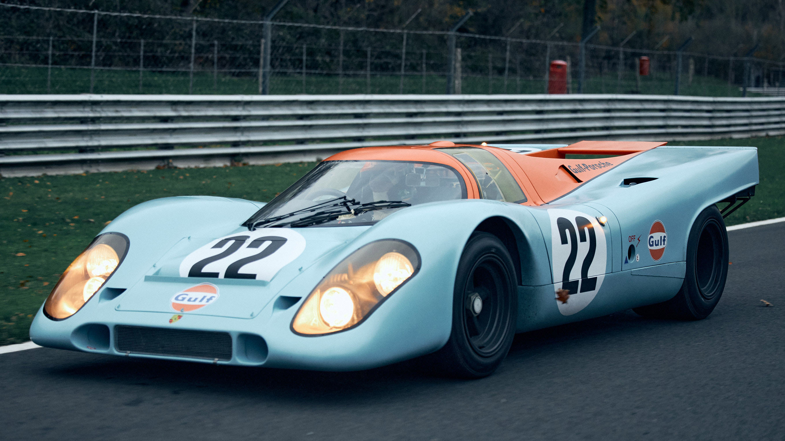
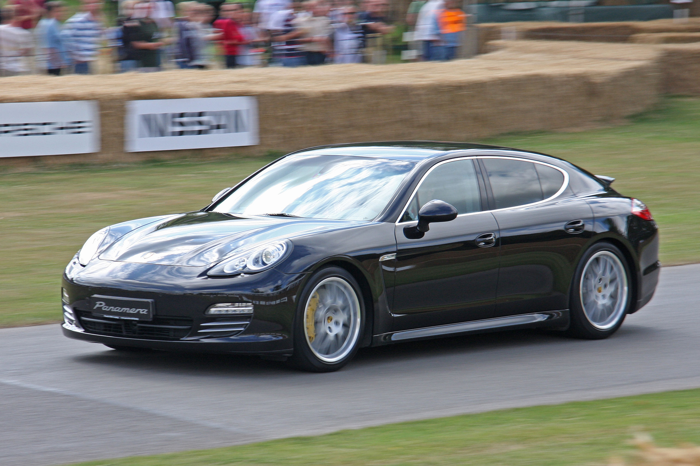
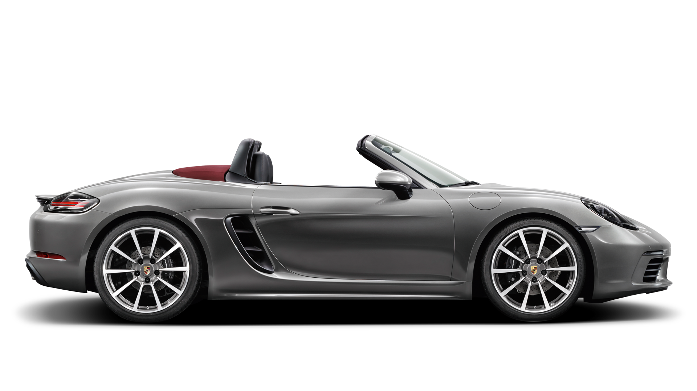

|
 |
|||
1947 yılında Ferdinand Porsche'nın
oğlu Ferry Porsche tarafından Stuttgart'ta
kurulmuş olan spor araba firmasıdır.
İlk modelleri 1948
yılında çıkan Porsche 356'dır.
Ferdinand Porsche 356 tasarımını yaparken
oğluna yardım etmiş ve 1951 yılında
ölmüştür.
1963 yılında araba yarışlarında müthiş başarılar
elde edecek Porsche 911'i piyasaya sunarlar.
6 silindirli, arkadan motorlu bir spor arabasıdır
ve rallilerde de büyük başarılar kazanır.
Bu süre içerisinde
Volkswagen ile yakınlaşılır.
Şirketin %30,9'u Volkswagen'e aittir.
Birçok projede ortaklaşa çalışmalarda bulunurlar.
(1969 VW-Porsche 914,
1976 Porsche 924 (Audi bazı parçaları kullanmıştır)
ve 2002 Porsche Cayenne (motoru da başta olmak üzere
birçok teknik aksamı ve ergonomik çizgileri Volkswagen
Touareg'de kullanılmıştır). 2003 yılında Ferdinand
Porsche'nin torunu, Ferdinand Piech Volkswagen'in CEO'su
olarak bu iki şirketin "ailesel" anlamda birleşmesini
sağlamıştır. Porsche, 1950-1963 yılları arasında
Porsche Traktör adıyla traktör, 1987-1989 yılları arasında
uçak motorları üretmiştir.
Porsche LeMans'ı 16 kez kazanmış,
Formula 1'de McLaren'in motorunu yaratmış,
Paris Dakar Rallisi'nin de zirvedeki
isimlerinden biri olmuştur.
Volkswagen AG,Porsche'nin %52,2 hissesini satın almıştır.[1]
Seat, Daewoo ve Subaru başta olmak
üzere birçok otomotiv firması danışman olarak
Porsche firmasıyla anlaşma yapmışlardır.
|
Porsche 911, Alman otomobil üreticisi Porsche tarafından 40 yıldan uzun bir süredir üretilen yüksek performanslı spor otomobil serisi. |
Porsche Taycan, Porsche tarafından 2019 yılından bu yana üretilen bir bataryalı elektrikli üst orta sınıf otomobil modelidir. |
Porsche 356, Porsche'nin üretilen ilk modeli. Ferdinand Porsche tasarımı sırasında yardımcı olmuştur, ancak proje ve genel model tasarımı Ferry Porsche tarafından gerçekleştirilmiştir. |
|
Porsche 550 Spyder, Alman otomobil üreticisi Porsche tarafından 1950'lerde üretilmiş spor otomobil. |
orsche 928, Alman otomobil üreticisi Porsche tarafından 1978-1995 yılları arasında üretilmiş GT (grand tourer) otomobil. |
 Porsche 911 GT1, Le Mans 24 Saat yarışları için özel olarak tasarlanmış bir yarış otomobilidir. |
|
|
 Porsche 917, Porsche'ye ilk Le Mans 24 Saat genel klasman zaferini kazandıran yarış otomobili (1970 ve 1971). |
 Porsche Panamera, Alman otomobil üreticisi Porsche'nin dört kapılı dört koltuklu coupe otomobil modeli. |
 Porsche Boxster, Alman otomobil üreticisi Porsche tarafından üretilmiş yüksek performanslı bir spor otomobildir. |
|